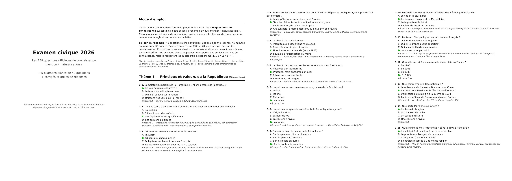

Les 259 questions officielles de connaissance de la mention « naturalisation », lues à voix haute avec la bonne réponse expliquée. 144 minutes d'audio à écouter dans le métro, en cuisinant, en marchant — plus un PDF de 72 pages et 5 examens blancs chronométrés.

| Fichier | Contenu | Durée |
|---|---|---|
| Thème 1 Principes et valeurs de la République | 38 questions | 23 min 47 |
| Thème 2 Système institutionnel et politique | 57 questions | 30 min 50 |
| Thème 3 Droits et devoirs | 37 questions | 23 min 11 |
| Thème 4 Histoire, géographie et culture | 83 questions | 42 min 27 |
| Thème 5 Vivre dans la société française | 44 questions | 23 min 40 |
| 5 examens blancs de 40 questions avec quotas officiels par thème, feuilles de réponses et corrigés | ||
| PDF 72 pages : les 259 questions, réponses et explications, imprimable | 72 p. | |
Le PDF contient un plan de 7 jours. En résumé : un thème audio par jour, la relecture des questions ratées dans le PDF, puis deux examens blancs chronométrés (45 minutes, 32/40) avant le jour J.
Non. Les questions proviennent des listes officielles publiées par le ministère de l'Intérieur ; les réponses et explications sont rédigées d'après le Livret du citoyen (édition approuvée par l'arrêté du 3 juillet 2026). Ce pack est indépendant de l'administration et ne remplace pas les documents officiels, qui restent gratuits.
Non, et personne ne peut les fournir : le ministère ne les publie pas. Nos examens blancs portent sur les 28 questions de connaissance, avec les quotas officiels par thème, et le PDF explique comment raisonner sur les mises en situation.
Le téléchargement reste disponible sans limite de durée. Les fichiers sont à vous.
Remboursement sous 14 jours, sans justification, via le lien de paiement.
L'audio est lu à un rythme ralenti et articulé. Le pack vise le niveau B1–B2, celui exigé pour la naturalisation.
Les questions du programme sont publiques. Elles sont ici classées par thème, avec la bonne réponse et une explication courte — sans inscription :
Civic Audio — pack de révision indépendant. Questions : listes officielles du ministère de l'Intérieur (Licence Ouverte 2.0) ; réponses et explications d'après le Livret du citoyen. Aucune affiliation avec le ministère de l'Intérieur, France Éducation international ou la CCI Paris Île-de-France.
Site hébergé sur GitHub Pages. Aucun cookie de suivi, aucune donnée personnelle collectée.